Tradição, Técnica e Mercado
A viticultura é simultaneamente uma das práticas agrícolas mais antigas da humanidade e uma das mais dinâmicas no século XXI. Cultivar a videira exige conhecimento profundo do terroir, das castas e das técnicas agronómicas — e a sua evolução reflecte tanto tradições milenares como inovações científicas recentes.
Velho Mundo vs. Novo Mundo
Velho Mundo
- Europa, Médio Oriente, Norte de África
- Denominações de origem como eixo central
- Tradição e terroir acima da casta
- Regulamentação estrita de produção
- Exemplos: Portugal, França, Itália, Espanha
Novo Mundo
- Américas, Oceânia, África do Sul
- Casta como elemento de marketing principal
- Maior liberdade na produção
- Inovação tecnológica intensa
- Exemplos: Austrália, Argentina, EUA, Chile
Compasso e Densidade de Plantação
O compasso define o espaçamento entre linhas e entre pés dentro da linha. Influencia directamente a densidade de plantação (número de pés por hectare) e, consequentemente, a competição radicular, a expressão do terroir e a qualidade da uva.
Mecanização e Vinhas Velhas
A mecanização (vindima mecânica, poda assistida, gestão da vegetação) reduz custos e permite trabalhar grandes extensões. Contudo, vinhas em pendente acentuada — como no Douro ou Minho — permanecem essencialmente manuais.
Vinhas velhas (com 40, 60 ou mais de 80 anos) produzem menos quantidade mas uvas de maior concentração e complexidade. Os sistemas radiculares profundos acedem a camadas de solo inacessíveis a vinhas jovens, exprimindo o terroir de forma mais completa.
Em Portugal, a qualidade do vinho é certificada pelas Comissões Vitivinícolas Regionais (CVR), que gerem as denominações de origem (DOP) e as indicações geográficas (IGP). A pirâmide vai de Vinho de Mesa → IGP → DOP, com o nível mais alto a exigir castas, práticas e zonas de produção específicas.
A Planta e as Castas
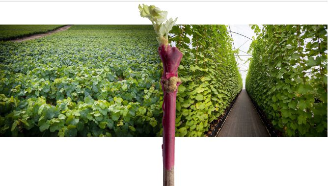
Casta e Porta-Enxerto
Após a devastação da filoxera no século XIX, todas as vinhas europeias passaram a ser plantadas com a parte aérea (casta europeia Vitis vinifera) enxertada sobre raízes de espécies americanas resistentes ao insecto. Este binómio casta + porta-enxerto é hoje universal na viticultura.
A escolha do porta-enxerto influencia o vigor da videira, a data de maturação, a adaptação ao solo e a resistência ao calcário. A combinação errada pode comprometer a qualidade mesmo com uma excelente casta.
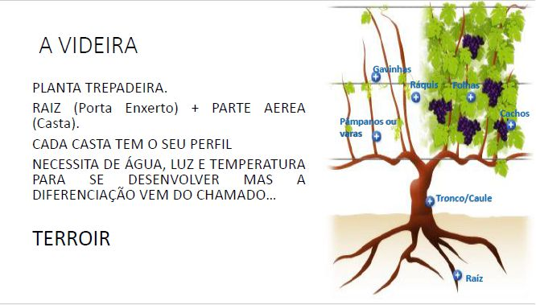
Cultivo e Propagação
A videira propaga-se principalmente por estaca (segmento de sarmento com 2–4 gemas) ou por mergulhia. A propagação vegetativa garante que cada planta é geneticamente idêntica à planta-mãe — fundamental para manter as características varietais.
Na instalação da vinha, o solo é desfundo e preparado; o porta-enxerto é plantado e, após um ano, é enxertado com a casta desejada. A vinha começa a produzir uvas de qualidade apenas a partir do 4.º–5.º ano.
Clones
Um clone é um indivíduo seleccionado dentro de uma casta, com características específicas de produção, sanidade ou perfil aromático. A selecção clonal permite reproduzir as melhores plantas de uma vinha sem perder variabilidade genética na casta.
A casta Alvarinho possui clones numerados (44, 45, 46, 47) com comportamentos distintos em termos de vigor, índice de fertilidade e perfil aromático. A escolha do clone correcto é parte da estratégia vitícola de cada produtor.
Tratamento da Vinha
A forma como a vinha é tratada ao longo do ano define o seu equilíbrio fisiológico, a sanidade das uvas e, em última análise, a qualidade do vinho. Existem cinco abordagens principais, com implicações ambientais e qualitativas distintas.
| Sistema | Princípio | Características |
|---|---|---|
| Convencional | Produtos químicos de síntese | Fungicidas, herbicidas e insecticidas; máxima eficácia, maior impacto ambiental |
| IPM (Proteção Integrada) | Mínimo necessário | Monitorização constante; intervenção só quando necessário; reduz doses |
| PI + Fertilização | Produção integrada | Fertilização racional baseada em análises de solo; balanço nutricional |
| Biológico / Orgânico | Sem síntese química | Cobre, enxofre e extractos naturais; certificação obrigatória |
| Biodinâmico | Holístico e lunar | Calendário lunar, preparados biodinâmicos (501, 500); filosofia de Steiner |
Poda da Videira
A lenda conta que foi um burro que ensinou os viticultores a podar — ao roer os sarmentos de uma vinha, esta produziu mais e melhor na época seguinte. Seja como for, a poda é a operação mais determinante para o equilíbrio entre produção e qualidade.
Poda Curta (Cordão)
- Esporões com 2–3 gemas
- Menor vigor vegetativo
- Facilita mecanização
- Adequada para castas de fertilidade basal elevada
Poda Mista (Guyot)
- Uma vara longa (6–12 gemas) + esporão de renovação
- Maior produção
- Adequada para castas de fertilidade basal baixa
- Comum em Vinho Verde e Alentejo
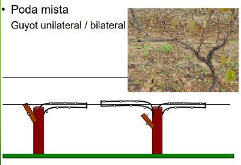
A empa (ou empamento) consiste em dobrar e atar a vara longa horizontalmente ao arame, uniformizando o rebentamento das gemas ao longo de toda a vara. A poda de verão (despampa, desfolha, desponta) complementa a poda de inverno ao gerir a vegetação durante o crescimento.
Ciclo Vegetativo da Videira
A videira segue um ciclo anual bem definido, desde o choro de Março até à dormência de Dezembro. Cada fase tem implicações directas na qualidade da vindima e exige intervenções específicas do viticultor.
Após a poda, a seiva escoa pelas feridas de corte — sinal de que a videira "despertou". Indica reinício da actividade radicular.
As gemas abrem e os primeiros rebentos emergem. Fase de alto risco de geadas — uma geada nesta fase pode destruir toda a colheita.
As inflorescências abrem. A auto-polinização é rápida (8–15 dias). Temperatura > 15 °C e ausência de chuva são essenciais — chuva na floração causa coulure (queda de flores) e millerandage (bagos mal vingados).
Os bagos mudam de cor (tintos ficam roxo-negros; brancos ficam verde-amarelados). Início da acumulação de açúcares e redução da acidez. Marca o início da maturação.
Os açúcares acumulam-se, a acidez decresce, os aromas varietais desenvolvem-se. A data da vindima é a decisão mais crítica do ano.
As reservas de amido migram para o tronco e raízes. A planta entra em repouso vegetativo — fase ideal para a poda de inverno.
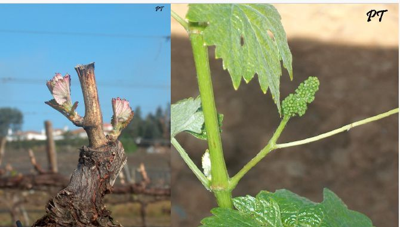
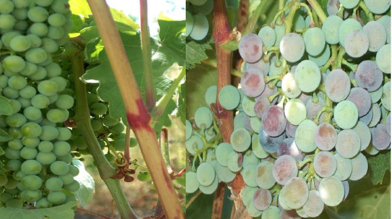
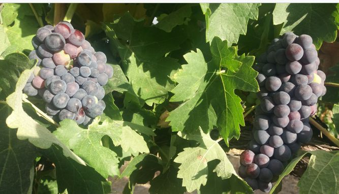
Calor e Maturação
A maturação da uva é um processo bioquímico que combina acumulação de açúcares, degradação de ácidos, síntese de antocianas (cor) e desenvolvimento de aromas. A temperatura é o principal motor — e o seu somatório ao longo da estação determina se uma casta chega à maturação completa numa dada região.
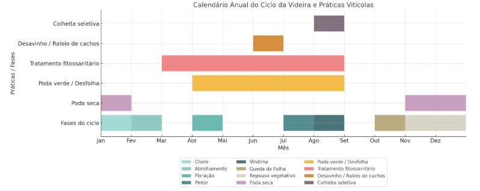
Acumulado de Horas de Calor
O Índice de Winkler mede o somatório de temperaturas activas acima de 10 °C ao longo da estação. É o principal indicador da aptidão de uma região para uma determinada casta.
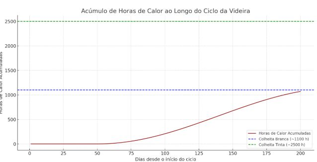
O que Define a Data de Vindima
A vindima ideal combina maturação tecnológica (teor de açúcar e acidez) com maturação fenólica (taninos e antocianas maduros). Vindimar cedo preserva acidez mas sacrifica corpo; vindimar tarde maximiza corpo e álcool mas arrisca oxidação e perda de frescura.
As duas maturações não evoluem sempre a par. Em anos muito quentes, os açúcares disparam antes dos taninos amadurecerem, gerando vinhos com alto álcool mas taninos verdes. Em anos frescos, os taninos amadurecem antes dos açúcares — vindimar cedo pode resultar em vinhos equilibrados mas com menos corpo.
Solo e Geologia
O solo é um dos pilares do terroir — influencia o regime hídrico, a disponibilidade de nutrientes e, em última análise, o perfil aromático e estrutural do vinho. A videira prospera em solos pobres, bem drenados, onde a escassez de recursos a obriga a aprofundar as raízes.
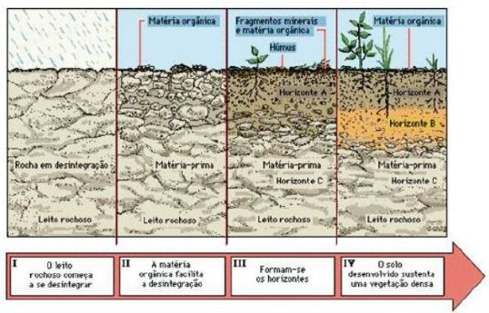
Tipos de Solo
Arenoso
- Drenagem rápida, baixa retenção de água
- Aquecimento rápido
- Resistente à filoxera (Colares)
- Vinhos leves, aromáticos, baixa cor
Argiloso
- Alta retenção de água e nutrientes
- Aquecimento lento
- Risco de encharcamento
- Vinhos encorpados, taninos firmes
Xisto (Ardósia)
- Acumula calor durante o dia, liberta-o à noite
- Baixa fertilidade, stress hídrico moderado
- Raízes penetram pelas fissuras
- Douro — concentração, mineralidade, especiaria
Granítico
- Boa drenagem, boa acidez natural
- Solos pobres em nutrientes
- Retenção moderada de água
- Vinho Verde, Dão — acidez elevada, frescura mineral
Calcário
- pH elevado, rico em cálcio
- Stress hídrico moderado a elevado
- Favorece acidez e elegância
- Bairrada (argilo-calcário) — frescura, tensão, longevidade
Basáltico / Vulcânico
- Rico em minerais, boa drenagem
- Solos jovens, muito férteis
- Alta salinidade (Açores, Madeira)
- Vinhos com mineralidade e salinidade distintas
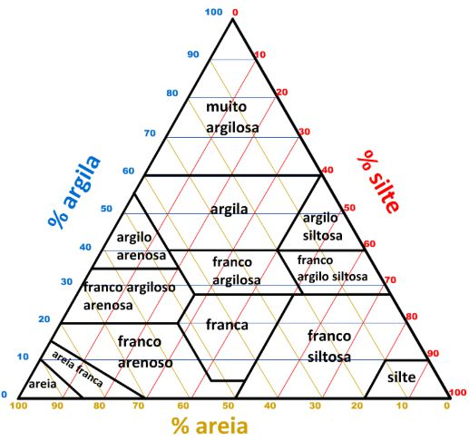
Clima, Altitude e Qualidade
O clima define o potencial de uma região; o terroir afina-o. Temperatura, pluviosidade, amplitude térmica e altitude interagem para criar as condições onde a videira produz uvas de maior ou menor qualidade.
Variáveis Climáticas Principais
| Factor | Efeito na Videira | Efeito no Vinho |
|---|---|---|
| Temperatura média | Define o ritmo de maturação | Álcool, corpo, aromas de fruta madura |
| Amplitude térmica | Noites frescas preservam acidez | Frescura, tensão, longevidade |
| Pluviosidade | Excesso → doenças fúngicas; défice → stress hídrico | Concentração vs. diluição |
| Insolação | Fotossíntese, síntese de açúcares e antocianas | Cor, corpo, aromas |
| Altitude | Temperatura mais baixa, UV mais intenso | Acidez, aromas primários, elegância |
O Conceito de Terroir
Terroir é a soma de todos os factores naturais de um lugar — solo, subsolo, topografia, clima, microclima — que conferem ao vinho uma identidade única e irreproduzível noutro local. É um conceito fundamentalmente francês mas adoptado universalmente.
| Factor Terroir | Açúcar | Acidez | Álcool | Cor / Corpo | Aromas |
|---|---|---|---|---|---|
| Solo pobre / drenado | ↑ | ↑ | ↑ | ↑↑ | Complexos |
| Clima quente | ↑↑ | ↓ | ↑↑ | ↑ | Fruta madura, especiaria |
| Altitude elevada | ↓ | ↑↑ | ↓ | ↓ | Florais, primários |
| Insolação intensa | ↑ | ↓ | ↑ | ↑↑ | Fruta negra, tosta |
| Exposição N–S | ↑ | — | ↑ | ↑ | Mais uniformes |
Portugal tem uma vantagem climática única: a influência atlântica garante amplitude térmica elevada mesmo em regiões quentes do interior, preservando frescura e acidez nos vinhos.
Origem e Diversidade das Castas
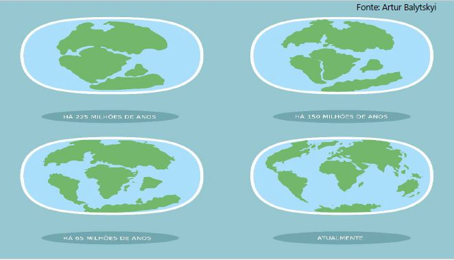
A videira pertence ao género Vitis, com mais de 60 espécies distribuídas pelo hemisfério norte. Apenas Vitis vinifera — originária do Cáucaso — produz uvas de qualidade suficiente para vinho. A domesticação iniciou-se entre 6 000 e 8 000 a.C., e a disseminação foi obra dos Fenícios, Gregos e Romanos.
Seleção Natural e Humana
Ao longo de milénios, a selecção natural (adaptação ao clima e solo locais) e a selecção humana (preferência por certas características) criaram uma diversidade genética enorme. Hoje existem mais de 10 000 castas identificadas mundialmente, das quais apenas algumas centenas têm expressão comercial relevante.
Portugal é extraordinariamente rico em castas autóctones — estima-se a existência de mais de 250 variedades únicas, das quais cerca de 50 têm relevância produtiva.
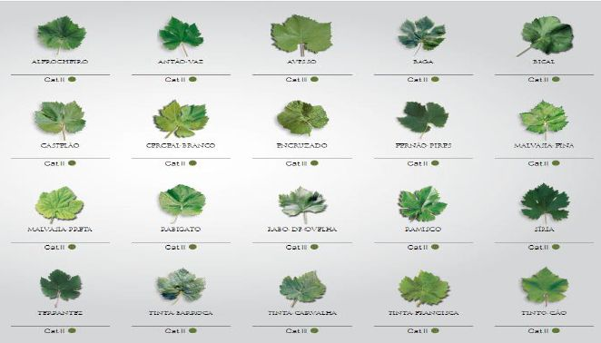
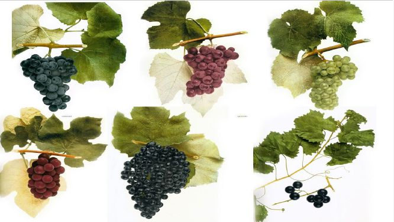
Ampelografia
A ampelografia é a ciência de identificação e descrição das castas através das suas características morfológicas — folha, cacho, bago, sarmento, flor. Com o ADN, tornou-se possível confirmar parentescos e desvendar origens que a morfologia não permitia. A Touriga Nacional, por exemplo, foi confirmada geneticamente como parente próxima da Touriga Franca.
Perfis Aromáticos — Castas Internacionais
As castas internacionais são cultivadas em múltiplos países e reconhecidas pelo consumidor global. Os seus perfis aromáticos são relativamente estáveis, embora o terroir e o clima provoquem variações significativas.
Castas Tintas
| Casta | Aromas Primários | Estrutura | Regiões de Referência |
|---|---|---|---|
| Cabernet Sauvignon | Groselha preta, cedro, pimento verde, menta | Alto tanino, alta acidez, alto álcool | Bordéus, Napa Valley, Coonawarra |
| Merlot | Ameixa, cereja, chocolate, violeta | Taninos suaves, médio corpo | Pomerol, Saint-Émilion, Toscana |
| Syrah / Shiraz | Amora, pimenta preta, azeitona, carne fumada | Alto tanino, alta acidez, encorpado | Rhône Norte, Barossa Valley |
| Pinot Noir | Cereja, framboesa, cogumelos, terra molhada | Baixo tanino, alta acidez, elegante | Borgonha, Oregon, Alemanha |
Castas Brancas
| Casta | Aromas Primários | Estrutura | Regiões de Referência |
|---|---|---|---|
| Chardonnay | Maçã verde, limão, baunilha (madeira), manteiga | Corpo médio a alto, acidez variável | Borgonha, Champagne, Califórnia |
| Sauvignon Blanc | Groselha branca, erva cortada, maracujá, piripiri | Alta acidez, corpo leve a médio | Loire, Marlborough, Rueda |
| Riesling | Lima, pêssego, mel, petróleo (com idade) | Alta acidez, baixo a alto álcool, grande longevidade | Mosel, Alsácia, Rheingau, Austrália |
Perfis Aromáticos — Castas Portuguesas
As castas autóctones portuguesas são a grande riqueza da vitivinicultura nacional. Os seus perfis aromáticos são únicos e frequentemente desconhecidos do consumidor internacional — o que representa tanto um desafio de comunicação como uma oportunidade de diferenciação.
Tintas Nobres
| Casta | Aromas Principais | Estrutura | Regiões |
|---|---|---|---|
| Touriga Nacional | Violeta, mirtilo, rosas, frutos negros, menta | Alto tanino, alta acidez, grande longevidade | Douro, Dão, Alentejo |
| Touriga Franca | Ameixa, frutos vermelhos, floral discreto, especiaria | Taninos sedosos, encorpada, elegante | Douro |
| Tinta Roriz / Aragonês | Ameixa preta, tabaco, terra, especiaria quente | Taninos firmes, corpo médio a alto | Douro, Alentejo |
| Baga | Cereja ácida, alcatrão, cedro, terra | Alta acidez, alto tanino — exige envelhecimento | Bairrada |
| Castelão | Ameixa, figo, chocolate, especiaria mediterrânica | Taninos suaves, corpo médio | Setúbal, Lisboa, Alentejo |
Brancas Nobres
| Casta | Aromas Principais | Estrutura | Regiões |
|---|---|---|---|
| Alvarinho | Pêssego, alperce, flor de laranjeira, mineral | Alta acidez, corpo médio-alto, baixa à média graduação | Monção e Melgaço (Vinho Verde) |
| Arinto | Limão, lima, maçã verde, pedra molhada | Alta acidez refrescante, grande longevidade | Todo o País — Bucelas, Vinho Verde, Alentejo |
| Encruzado | Pêssego branco, mel, noz, avelã | Corpo médio-alto, boa acidez, grande potencial de guarda | Dão |
| Antão Vaz | Banana, fruta tropical, mel, figo | Corpo alto, acidez baixa, aromático | Alentejo (Vidigueira) |
As fichas técnicas completas de cada casta portuguesa — morfologia, vigor, climas favoráveis, acidez natural e qualidade do vinho — estão disponíveis no Módulo III — Castas de Portugal.
Portugal Vitivinícola
Portugal é um dos países com maior densidade vitivinícola do mundo. Com cerca de 195 000 ha de vinha, é simultaneamente um dos maiores produtores e consumidores europeus de vinho per capita, e o maior exportador mundial de vinho verde e vinho do Porto.
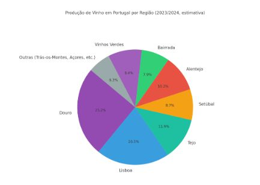
Estrutura do Setor
| Região | Área (ha) | % do Total |
|---|---|---|
| Vinho Verde | ~38 000 | ~19% |
| Douro | ~45 000 | ~23% |
| Alentejo | ~26 000 | ~13% |
| Tejo | ~19 000 | ~10% |
| Lisboa | ~14 000 | ~7% |
| Outras regiões | ~53 000 | ~28% |
| Total | ~195 000 | 100% |
Diversidade Geográfica e Climática
Num país de apenas 89 000 km², Portugal concentra uma variedade climática notável: desde o clima atlântico húmido do Noroeste até ao mediterrânico continental seco do Alentejo, passando pelo continental de montanha das Beiras e pelos microclimas subtropicais da Madeira e dos Açores. Esta diversidade, combinada com a riqueza de castas autóctones, é a principal fonte de distinção do vinho português.
Vinhos Verdes
A região dos Vinhos Verdes abrange o Noroeste de Portugal, entre o rio Minho a Norte e o Douro a Sul. É a maior região vitivinícola demarcada do país, caracterizada pelo clima atlântico (chuva abundante, verões amenos, elevada humidade), solos graníticos e uma viticultura de pendente e de vale.
- Somatório térmico
- ~1 300 h (acima de 10 °C)
- Precipitação
- ~1 400 mm/ano
- Temp. média
- 14 °C
- Curiosidade
- 1.º vinho português a ser exportado
Sub-Regiões
| Sub-Região | Características | Castas de Destaque |
|---|---|---|
| Monção e Melgaço | A mais quente e seca; grande amplitude térmica; granito | Alvarinho (exclusiva) |
| Lima | Atlântico moderado; granito e xisto | Loureiro, Arinto |
| Cávado | Vale protegido; forte tradição de Loureiro | Loureiro, Arinto |
| Ave | Mais frio e húmido | Trajadura, Avesso |
| Basto | Interior montanhoso; solos graníticos | Azal, Arinto |
| Sousa | Sul da região; mais quente | Vinhão (tintas), Trajadura |
| Baião / Amarante / Paiva | Transição para o Douro; altitude | Avesso, Arinto |
Sistemas de Condução do Minho
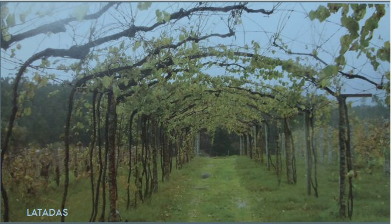
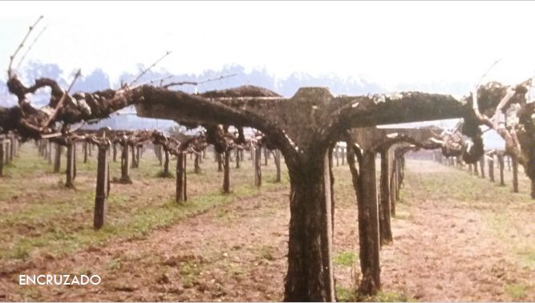
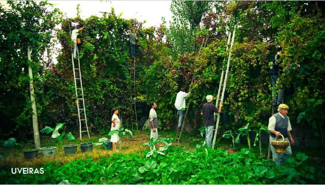
A latada (ou ramada) é o sistema tradicional do Minho: uma pérgola alta que eleva a videira acima dos 1,5 m, permitindo o cultivo de outras culturas por baixo e protegendo os cachos da humidade do solo. A espaldeira moderna substituiu a latada em muitas explorações, permitindo mecanização e melhor gestão da vegetação.
Estilo dos Vinhos
Os Vinhos Verdes brancos são conhecidos pela frescura, acidez elevada e leveza (tipicamente 8,5–11% álcool). O perlante natural (CO₂ residual) é característico. Com o crescimento do Alvarinho, surgiram vinhos com mais corpo, complexidade e potencial de guarda, especialmente de Monção e Melgaço.
Trás-os-Montes
Trás-os-Montes — literalmente "além das montanhas" — é uma vasta região do interior nordeste, separada do litoral pelas Serras do Marão e Alvão. O clima continental extremo, os solos pobres e bem drenados de granito e xisto, e a altitude elevada criam condições de stress hídrico que favorecem maturações concentradas e vinhos de carácter distinto.
- Altitude
- 350–650 m (Chaves a Valpaços)
- Precipitação
- ~500–900 mm/ano — decresce do Noroeste para o interior
- Solos
- Granito e xisto dominantes; baixa fertilidade, boa drenagem
- Curiosidade
- Bastardo é casta tinta autóctone emblemática desta região, rara noutros pontos do país
Sub-Regiões
| Sub-Região | Localização e Altitude | Perfil |
|---|---|---|
| Chaves | Vale do Tâmega; ~350–400 m | Mais atlântico e fresco; brancos leves e aromáticos |
| Valpaços | Planalto central; 450–650 m | Continental marcado; tintos estruturados e encorpados |
| Planalto Mirandês | Extremo NE, fronteira espanhola | Árido e muito quente; tintos de grande concentração |
Castas
Tintas
- Bastardo — autóctone transmontana; aromática, acidez elegante
- Marufo — rústico, corpo elevado
- Trincadeira — cor intensa, fruta madura
- Touriga Nacional / Touriga Franca
- Tinta Roriz
Brancas
- Gouveio — mineral, acidez estruturada
- Viosinho — aromático, elegante
- Rabigato — frescura, leveza
- Malvasia Fina
- Síria / Roupeiro, Fernão Pires
Perfil dos Vinhos
Os tintos de Trás-os-Montes combinam rustecidade e personalidade: fruta escura madura e corpo firme nos anos quentes do Planalto Mirandês; elegância e frescura nos tintos de Chaves. Os brancos, base Gouveio e Viosinho, surpreendem pela mineralidade e acidez viva, com perfil próximo dos brancos do Douro. A região, ainda sub-representada no mercado, é uma fonte de descoberta crescente para o enófilo curioso.
Douro
O Douro é uma das grandes regiões vinícolas do mundo — palco do Vinho do Porto e, crescentemente, de vinhos tranquilos de categoria internacional. O xisto dominante, o calor intenso e os socalcos icónicos criam condições únicas de stress hídrico e concentração.
- Somatório térmico
- ~2 400 h (acima de 10 °C)
- Precipitação
- ~700 mm/ano
- Temp. média
- 15 °C
Sub-Regiões
| Sub-Região | Clima | Solo | Perfil |
|---|---|---|---|
| Baixo Corgo | Mais atlântico, mais chuva | Xisto | Vinhos mais leves, frescos |
| Cima Corgo | Continental; verões quentes | Xisto dominante | Grandes vinhos tintos e Porto |
| Douro Superior | Continental extremo; árido | Xisto e granito | Alta concentração; crescimento rápido |
Castas
Tintas Principais
- Touriga Nacional — nobreza, longevidade
- Touriga Franca — elegância, volume
- Tinta Roriz / Aragonês — estrutura, especiaria
- Tinta Barroca — precocidade, suavidade
- Tinto Cão — acidez, longevidade
Brancas
- Viosinho — aromático, elegante
- Rabigato — acidez, frescura
- Gouveio — corpo, mineralidade
- Malvasia Fina — textura, floral
Sistemas de Plantação
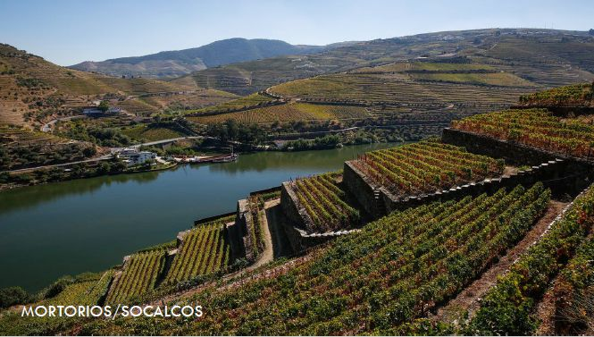
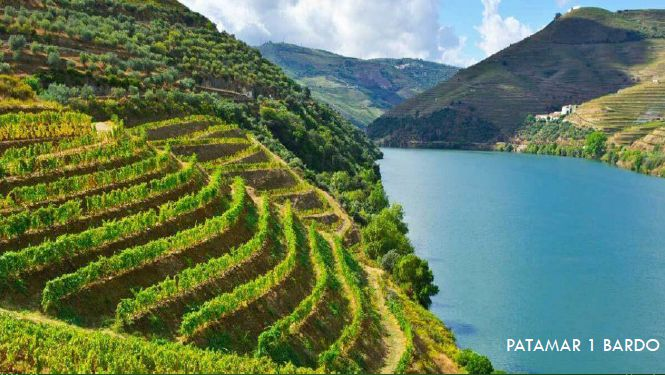
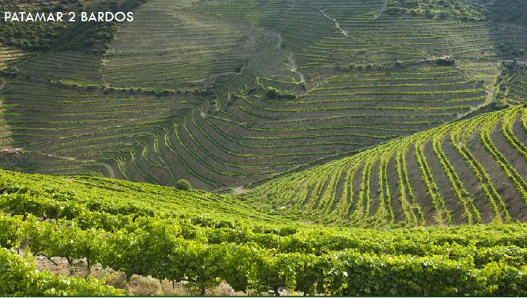
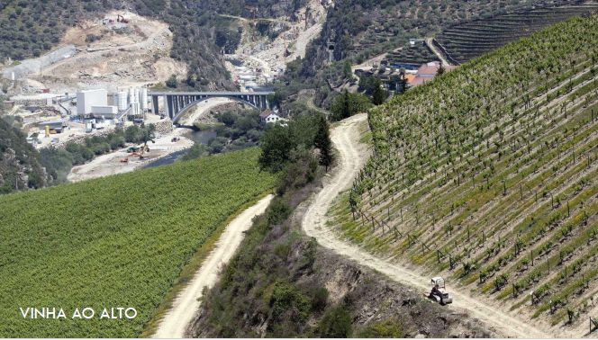
Dão
O Dão é uma das regiões mais elegantes de Portugal. Rodeado pelas Serras da Estrela, do Caramulo, de Montemuro e de Leomil, forma um anfiteatro natural que protege a vinha dos excessos de chuva atlântica. O granito domina (90% dos solos), conferindo acidez estrutural e mineralidade aos vinhos.
- Somatório térmico
- ~2 650 h (acima de 10 °C)
- Precipitação
- ~1 100 mm/ano
- Temp. média
- 15 °C
- Altitude
- 400–700 m — a região interior mais elevada do país
Castas
Tintas
- Touriga Nacional — casta nobre de referência
- Alfrocheiro — cor intensa, frutado
- Jaen (Mencía) — produtivo, expressivo
- Tinta Roriz — estrutura, especiaria
Brancas
- Encruzado — a grande branca do Dão; longevidade excecional
- Malvasia Fina — floral, texturoso
- Bical — acidez, frescura
- Cercial — aromático, elegante
Perfil dos Vinhos
Os tintos do Dão são conhecidos pela elegância, taninos finos e grande capacidade de envelhecimento. A revolução de qualidade a partir dos anos 1990 — com a entrada de produtores privados após a queda das cooperativas — transformou o Dão numa das regiões mais exciting de Portugal. O Encruzado é unanimemente reconhecido como a maior branca autóctone do país.
Bairrada
A Bairrada é uma região de identidade fortíssima e história marcada pelas ordens religiosas (mosteiro de Lorvão, mosteiro de Celas). Os solos argilo-calcários, o clima atlântico húmido e a casta Baga criam vinhos de estrutura intensa, alta acidez e extraordinária longevidade.
- Somatório térmico
- ~2 500 h (acima de 10 °C)
- Precipitação
- ~1 200 mm/ano
- Temp. média
- 13,5 °C — a mais fresca das regiões do centro
Castas
Tintas
- Baga — dominante; alta acidez, alto tanino; longevidade notável
- Touriga Nacional, Merlot, Cabernet (complementares)
Brancas / Espumantes
- Bical — acidez fina, base para espumantes
- Maria Gomes — aromático, fruta branca
- Arinto — estrutura, longevidade
- Cercial — elegância
Estilos de Vinho
A Bairrada produz quatro estilos principais: tintos DOC (base Baga, longa guarda), brancos DOC (frescura atlântica), espumantes de método clássico (referência nacional, com envelhecimento em garrafa) e rosés. Os espumantes da Bairrada são considerados os melhores de Portugal.
Beiras e Beira Interior
As Beiras formam um conjunto de sub-regiões no interior da Beira, junto à fronteira espanhola. A altitude elevada (até 850 m) e o clima continental de montanha criam condições extremas: geadas tardias em Primavera, verões curtos mas intensos e noites frescas que preservam acidez e aromas primários.
- Precipitação
- ~400 mm (Castelo Rodrigo/Pinhel) — ~700 mm (Cova da Beira)
- Solos
- Granito dominante; manchas de xisto e argila
- Curiosidade
- Demarcada em 1999 — uma das regiões DOC mais recentes; Rufete é a casta tinta autóctone emblemática
Castas
Tintas
- Rufete — casta autóctone; perfil elegante, acidez alta
- Touriga Nacional
- Trincadeira
- Marufo
Brancas
- Síria / Roupeiro — dominante; fruta fresca
- Fonte Cal
- Arinto
A Beira Interior inclui as sub-regiões Castelo Rodrigo, Pinhel e Cova da Beira, cada uma com microclimas distintos. O potencial é reconhecido mas a região permanece sub-explorada, com crescente interesse de produtores na busca de vinhos de altitude frescos e elegantes.
Tejo
A região do Tejo estrutura-se em três zonas fisiográficas distintas, cada uma com solos e perfis de vinho diferentes. O Rio Tejo e os seus afluentes são os eixos geográficos que definem estas três zonas.
- Somatório térmico
- ~2 900 h (acima de 10 °C)
- Precipitação
- ~700 mm/ano
- Temp. média
- 16 °C
- Curiosidade
- Produção de vinho documentada desde o séc. X
As Três Zonas
| Zona | Solos | Perfil dos Vinhos |
|---|---|---|
| Lezíria | Aluviais, profundos, férteis | Brancos leves, frescos, de consumo jovem |
| Charneca | Arenosos, pobres, bem drenados | Tintos encorpados, de maior concentração |
| Bairro | Argilo-calcários, boa estrutura | Tintos estruturados, com potencial de guarda |
Castas e Estilos
Brancas
- Fernão Pires — dominante; aromático, floral
- Arinto — acidez, frescura
- Vital — complementar
Tintas
- Castelão — base regional
- Touriga Nacional
- Trincadeira
- Alicante Bouschet, Syrah
Perfil dos Vinhos
Os brancos do Tejo — sobretudo os da Lezíria, base Fernão Pires — são frutados, florais e de consumo jovem: um dos estilos mais acessíveis e populares de Portugal. Os tintos, particularmente os do Bairro (Castelão, Trincadeira), têm corpo médio, taninos suaves e frescura que os torna versáteis à mesa. A região produz esmagadoramente sob IGP (~90%), o que confere liberdade varietal e boa relação qualidade/preço. Nas últimas décadas, produtores independentes afirmaram vinhos de terroir com ambição de guarda, mudando a imagem de região meramente volumétrica.
Lisboa
A região de Lisboa é um mosaico de nove denominações de origem, cada uma com identidade própria. Da Estremadura ao Ribatejo, o clima atlântico modera as temperaturas, os solos variam entre argilo-calcários e arenosos, e algumas denominações guardam histórias únicas.
- Precipitação
- ~700 mm/ano
- Curiosidade
- Viticultura desde o séc. XII — uma das mais antigas do país
- Destaque
- Zona de produções elevadas; inclui a única vinha europeia não enxertada (Colares)
Denominações de Destaque
| DOC | Especificidade |
|---|---|
| Alenquer | Maior e mais produtiva; tintos com estrutura e frescura atlântica |
| Torres Vedras | Clima mais atlântico; acidez natural elevada |
| Colares | Vinhas em areia — a única região preservada da filoxera; Ramisco emblemático; produção muito pequena |
| Bucelas | Brancos de Arinto — acidez excepcional, longevidade notável |
| Carcavelos | Vinho generoso raro; área quase extinta; histórico relevante |
| Óbidos, Arruda, Encostas d'Aire, Lourinhã | Produção diversificada, crescente foco em qualidade |
As vinhas de Colares estão plantadas em areia sobre argila, numa faixa costeira varrida pelo vento atlântico. A areia impediu a chegada da filoxera — o insecto não consegue propagar-se neste substrato. Por isso, as videiras de Colares são as raras videiras europeias com raízes próprias, não enxertadas. A casta Ramisco produz aqui vinhos de acidez e tanino excepcionais, exigindo décadas de guarda.
Castas
Tintas
- Castelão — base regional; fruta vermelha, médio corpo
- Touriga Nacional — estrutura, longevidade
- Touriga Franca — elegância, volume
- Tinta Miúda — autóctone; acidez, carácter
- Trincadeira, Alicante Bouschet
- Cabernet Sauvignon, Syrah (complementares)
Brancas
- Arinto — dominante em Bucelas; acidez fina, longevidade
- Fernão Pires — aromático, floral
- Vital — autóctone regional; frescura
- Malvasia — corpo, textura
- Seara Nova — complementar
- Chardonnay (complementar)
Setúbal / Terras do Sado
A Península de Setúbal é o território de três denominações: DOP Palmela, DOP Setúbal (generosos) e IGP Península de Setúbal. A diversidade de solos e microclimas permite uma gama notável de estilos.
- Somatório térmico
- ~2 240 h (acima de 10 °C)
- Precipitação
- ~650 mm/ano
- Destaque
- Muitas vinhas com mais de 40 anos em compasso apertado — factor de qualidade
Castas e Estilos
| Estilo | Casta | Característica |
|---|---|---|
| Moscatel de Setúbal | Moscatel ≥ 85% | Generoso aromático; frutos tropicais, mel; jovem ou velho |
| Moscatel Roxo | Moscatel Roxo | Raridade; cor rosada; perfil distinto de laranja e frutos secos |
| Tintos Palmela | Castelão ≥ 67% | Médio corpo; fruta vermelha; boa relação qualidade/preço |
| Brancos / Rosés | Fernão Pires, Arinto | Frescos, aromáticos, consumo jovem |
Moscatel de Setúbal — Classificações de Envelhecimento
- Jovem — carácter fresco, fruta tropical, mel
- Velho / Superior — oxidação lenta, frutos secos, laranja, caramelo
- Colheita — ano de vindima específico
- Superior — envelhecimento mínimo prolongado em madeira
Alentejo
O Alentejo transformou-se na região vitivinícola mais dinâmica de Portugal nas últimas três décadas. Do anonimato das cooperativas nos anos 80 à consagração internacional dos anos 2000, a região combina calor mediterrânico, solos variados e castas de grande personalidade.
- Somatório térmico
- ~3 000 h (acima de 10 °C)
- Precipitação
- ~550 mm/ano
- Temp. média
- 17,5 °C — a mais quente do continente
Sub-Regiões e Solos
| Sub-Região | Solo | Perfil |
|---|---|---|
| Portalegre | Granítico; altitude 400–800 m | Os mais frescos e elegantes do Alentejo |
| Borba / Évora | Argilo-calcário, mármores | Estruturados, elegantes |
| Reguengos / Redondo | Xistoso, granítico | Encorpados, concentrados |
| Moura / Granja-Amareleja | Arenoso, muito quente | Os mais alcoólicos; Moreto e Tinta Grossa |
Castas
Tintas
- Alicante Bouschet — emblemática; cor intensa, fruta negra
- Aragonês / Tinta Roriz
- Trincadeira
- Touriga Nacional
- Syrah (crescente)
Brancas
- Antão Vaz — tropical, aromático
- Arinto
- Roupeiro / Síria
- Verdelho
Vinhos de Talha
A tradição dos vinhos de talha — fermentados em grandes ânforas de barro — sobreviveu no Alentejo desde a época romana. Em 2010, obteve uma DOC própria. Os vinhos de talha fermentam e repousam com as massas (grainha, engaço, película) dentro da talha, em contacto prolongado com o barro. O resultado é vinhos de textura única, baixo sulfuroso e carácter oxidativo controlado.
Algarve
O Algarve tem história vitivinícola desde os Gregos e Fenícios, mas a região modernizou-se significativamente nas últimas décadas. O clima mediterrânico quente e seco favorece uvas maduras; os solos variam entre calcários nas serras (Monchique, Caldeirão) e arenosos no barlavento.
- Somatório térmico
- ~3 100 h (acima de 10 °C) — maior de Portugal continental
- Precipitação
- ~400 mm/ano — a mais seca do país
- Temp. média
- 17 °C
Castas e Estilos
Tintas
- Negra Mole — emblemática; leve, fruta vermelha fresca
- Castelão
- Touriga Nacional
- Syrah (crescente)
Brancas
- Arinto
- Síria / Roupeiro
- Antão Vaz
- Fernão Pires
Perfil dos Vinhos
Os tintos algarvios variam da leveza à estrutura: a Negra Mole produz vinhos leves, de fruta vermelha fresca e taninos suaves, ideais para consumo jovem; o Castelão e a Trincadeira permitem versões mais concentradas e com potencial de guarda. Os brancos — base Arinto e Síria — surpreendem pela frescura e acidez natural apesar do calor intenso. A viticultura algarviana modernizou-se significativamente desde os anos 2000: produtores privados apostaram na reconversão varietal, nas castas autóctones e na qualidade sobre o volume. As quatro DOCs (Lagos, Portimão, Lagoa, Tavira) cobrem o território de poente a nascente, mas a maioria do vinho de qualidade circula sob IGP Algarve, com maior liberdade criativa. O turismo internacional criou um mercado local sustentado e receptivo à experimentação.
Madeira
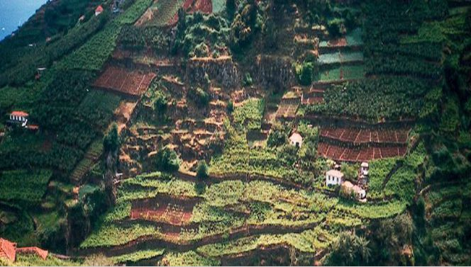
Clima e Solos
A Madeira apresenta um clima subtropical oceânico com grandes variações microclimáticas. As vinhas concentram-se entre 150 e 800 metros de altitude, nas encostas viradas para o mar. Os solos são predominantemente basálticos, ricos em potássio e matéria orgânica, com condução em latada.
- Precipitação
- 500 mm (encosta Norte) — 100 mm (encosta Sul)
- Curiosidade
- Vinha implantada desde o início do povoamento, séc. XV; a Malvasia madeirense era um dos vinhos mais famosos do mundo no séc. XVI
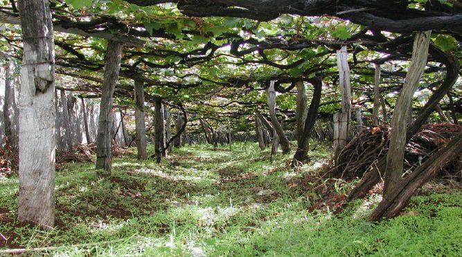
Castas Nobres
| Casta | Estilo | Teor de Açúcar |
|---|---|---|
| Sercial | Seco, muito ácido, austero | < 59 g/L |
| Verdelho | Meio-seco, fresco, corpo médio | 60–79 g/L |
| Boal (Bual) | Meio-doce, encorpado, caramelizado | 80–99 g/L |
| Malvasia (Malmsey) | Doce, complexo, aveludado | ≥ 100 g/L |
O Processo de Estufagem e Canteiro
O Vinho da Madeira é único pelo processo de aquecimento controlado — que imita as condições das longas viagens marítimas tropicais dos séculos XVIII e XIX:
Estufagem
- Aquecimento em tanques inox com serpentina (~45 °C)
- Duração: ~3 meses
- Utilizado para Tinta Negra e vinhos comerciais
- Processo mais rápido e controlado
Canteiro
- Envelhecimento natural em pipas em armazéns aquecidos pelo sol
- Duração: anos a décadas
- Para castas nobres e vinhos de qualidade superior
- Oxidação lenta, complexidade máxima
Classificações de Envelhecimento
| Categoria | Envelhecimento Mínimo |
|---|---|
| Reserva | 5 anos |
| Reserva Velha | 10 anos |
| Reserva Muito Velha | 15 anos |
| Colheita | 5 anos (vinho de um único ano) |
| Frasqueira (Vintage) | 20 anos em madeira (único ano) |
Produtores e Reputação
A maioria dos viticultores possui parcelas inferiores a 0,3 ha e vende a uva às grandes empresas vinificadoras: Blandy's, Henriques & Henriques, Barbeito, Justino's e D'Oliveiras. A reputação internacional do Vinho da Madeira permanece sólida nos EUA, Reino Unido e Japão, valorizado por sommeliers e coleccionadores. A oxidação induzida torna os vinhos estáveis após abertos por meses ou anos — alguns exemplares históricos duram mais de 100 anos.
Açores
A Região Demarcada dos Vinhos dos Açores é um território singular, 1 500 km a oeste de Lisboa. As três ilhas produtoras — Pico, Graciosa e Terceira (Biscoitos) — apresentam condições climáticas e vitícolas únicas no mundo.
- Precipitação
- 752 mm (S. Maria) — 2 385 mm (Terceira)
- Temp. média
- 17 °C
- Curiosidade
- Introdução da vinha pelos Franciscanos no séc. XV; videiras plantadas directamente em fendas na rocha basáltica
Clima e Solos
Os Açores têm um clima temperado oceânico húmido: temperaturas amenas, precipitação elevada, ventos fortes e salinidade do ar. Os solos são predominantemente basálticos, com camada cultivável mínima — as videiras crescem plantadas directamente em fendas na rocha de lava.
As Curraletas — Um Sistema Único no Mundo
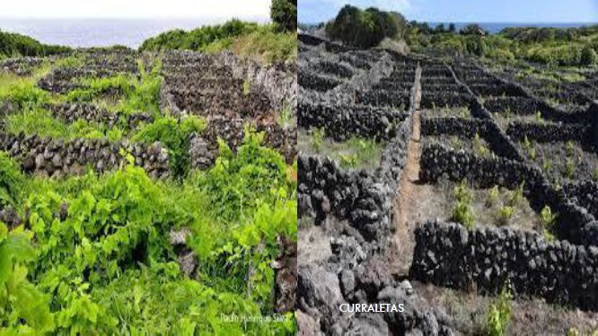
As curraletas são pequenas parcelas de vinha delimitadas por muros de pedra solta de basalto (muros de pedra seca), com cerca de 1 metro de altura. Este sistema ancestral serve duas funções:
- Protecção dos ventos salinos do Atlântico
- Aumento da temperatura do solo por irradiação térmica do basalto negro
Cada curraleta tem apenas alguns metros quadrados. As videiras são plantadas directamente em fendas naturais ou abertas na rocha. Tudo é feito manualmente — não existe mecanização possível neste sistema.
Castas
Emblemáticas
- Verdelho — a mais plantada; vinhos licorosos históricos para o Império Russo e Inglaterra
- Arinto dos Açores — variedade exclusiva, distinta da Arinto continental
- Terrantez do Pico — casta rara, ciclo longo; muito valorizada
Outras Autorizadas
- Alicante Branco, Boal
- Malvasia, Moscatel Graúdo
- Fernão Pires
Estilos e Denominações
Os brancos tranquilos modernos dos Açores têm conquistado reconhecimento pela mineralidade, salinidade e acidez elevada — um perfil único gerado pelo basalto, pelo mar e pelo clima insular. São vinhos de pureza e originalidade sensorial crescentemente valorizados por enófilos.
| Denominação | Ilha |
|---|---|
| DOP Pico | Ilha do Pico — curraletas, UNESCO |
| DOP Graciosa | Ilha Graciosa |
| DOP Biscoitos | Ilha Terceira |
| IG Açores | Outras ilhas ou fora das especificações das DOPs |
Renovação e Enoturismo
Após um declínio acentuado no século XX, a viticultura açoriana revitalizou-se desde 2000: projectos de replantação, reconversão de curraletas e produtores como Azores Wine Company, Adega do Vulcão e Curral Atlântis lideram a modernização. O enoturismo na ilha do Pico, com visitas às curraletas históricas e provas em antigas adegas, é um polo em forte crescimento.